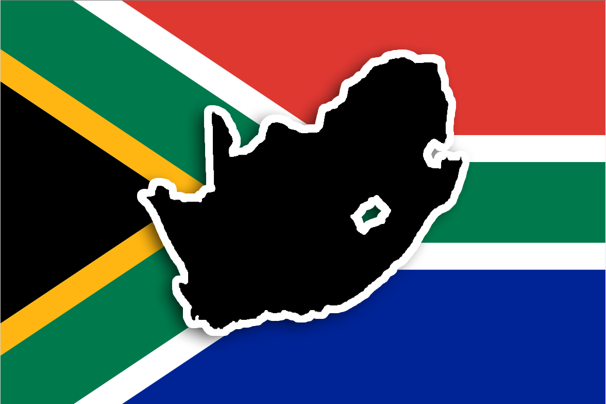
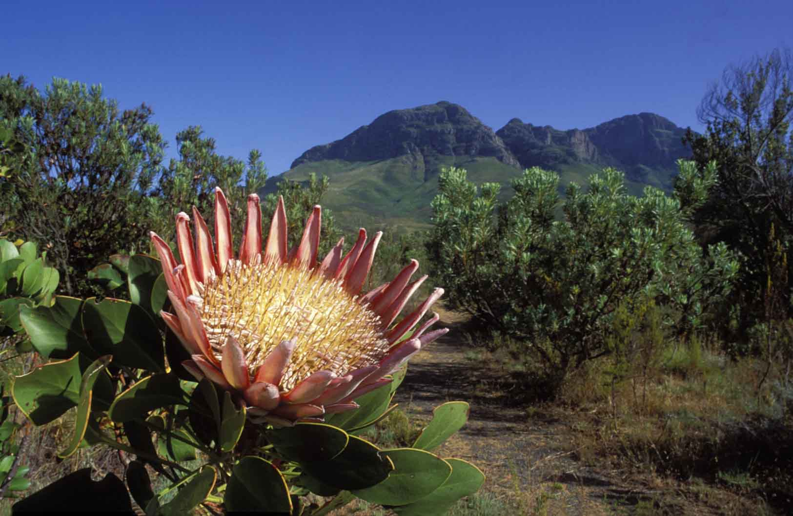

<!--
  Generated template for the CatergoriesPage page.

  See http://ionicframework.com/docs/components/#navigation for more info on
  Ionic pages and navigation.
-->
<ion-header>

  <ion-navbar color="purplecl" >
    <ion-title><ion-icon>CATERGORIES</ion-icon></ion-title>
  </ion-navbar>

</ion-header>


<ion-content padding class="background">
    <ion-list >
        <ion-item class="list">
          <ion-thumbnail item-start>
            
          </ion-thumbnail>
          <h2>History</h2>
          <p class="p">know your<br>country</p>
          <button ion-button  clear item-end color="light" (click)="historyPage()">Get <br>Started</button>
        </ion-item>
          <ion-item class="list">
            <ion-thumbnail item-start>
              
            </ion-thumbnail>
            <h2>Nature</h2>
            <p class="p">How well do you <br>know Nature?</p>
            <button ion-button clear item-end color="light" >Get <br>Started</button>
          </ion-item>
        </ion-list>

</ion-content>
